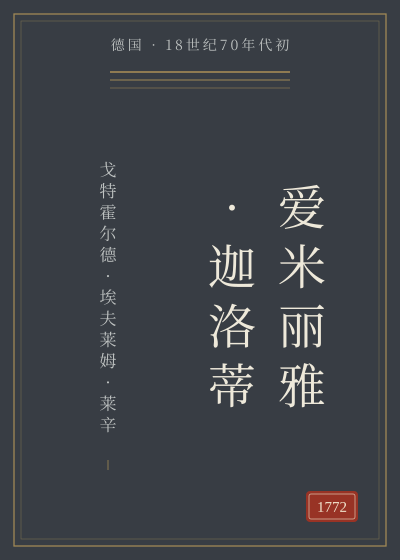
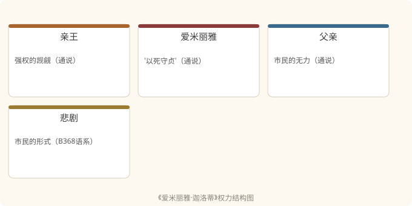

爱米丽雅·迦洛蒂
一、基本信息
| 作者 | 多丽丝·莱辛 |
|---|---|
| 成书/出版 | 1772年（Britannica B368：Emilia Galotti (1772)） Gotthold Ephraim Lessing — Encyclopaedia Britannica（百科全书） |
| 国别/地区 | 德国 |
| 时代 | 近代 · 18世纪70年代初 |
| 体裁 | 悲剧 |
| 语言 | 德语 |

《爱米丽雅·迦洛蒂》权力结构图（主题·结构图）
二、创作背景
Britannica（B368）：Emilia Galotti (1772)——剧作列表。
Britannica（B368）：莱辛——'plays of lasting importance'。
题材（通说待核）：亲王赫托勒的强权——爱米丽雅以死守贞。
三、内容脉络
（通说待核）亲王劫婚的阴谋与'死'的选择。
（通说待核）父权与贞洁的市民悲剧。
四、主要人物表
| 人物 | 身份 | 说明 |
|---|---|---|
| 爱米丽雅 | 市民之女 | （B368 书名人物） |
| 亲王赫托勒 | 施暴的权力 | （通说待核） |
五、主题与艺术特点
- 市民悲剧（B368：bürgerliches Trauerspiel 语系）。
- 权力对平民的觊觎（通说待核）。
- '以死守贞'的启蒙批判（通说待核）。
六、影响与评论
- Britannica：Emilia Galotti (1772)（B368）。
Gotthold Ephraim Lessing — Encyclopaedia Britannica（百科全书） - Britannica：莱辛戏剧序列（B368 作者级）。
Gotthold Ephraim Lessing — Encyclopaedia Britannica（百科全书）
七、阅读建议
难点
- 18世纪意大利背景（小说原型说）。
- '市民悲剧'的形式。
- 《爱米丽雅·迦洛蒂》中译本（人民文学等——通说待核）。
- 德文原版（公有领域）。
莱辛悲剧首选；与《智者纳坦》对读。
八、待核实
- 爱米丽雅/亲王人名核对（通说）。
- 1772年首演（不伦瑞克说）待核。
- '小说原型'（《教士》说）待核。
本页主要来源
多丽丝·莱辛的其他收录作品：金色笔记